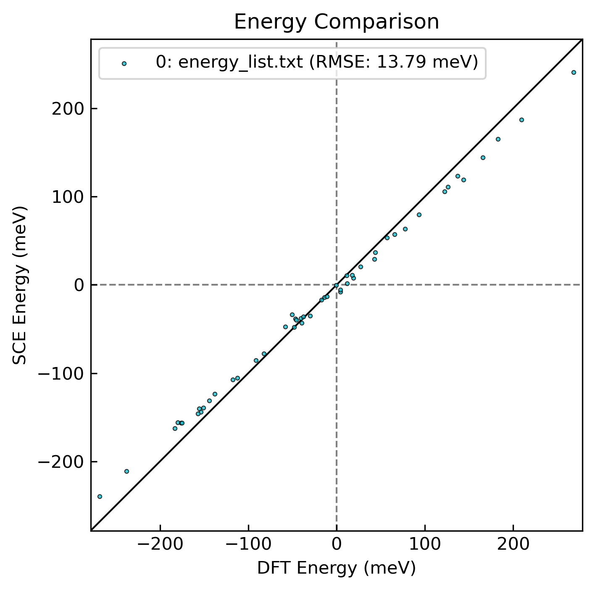
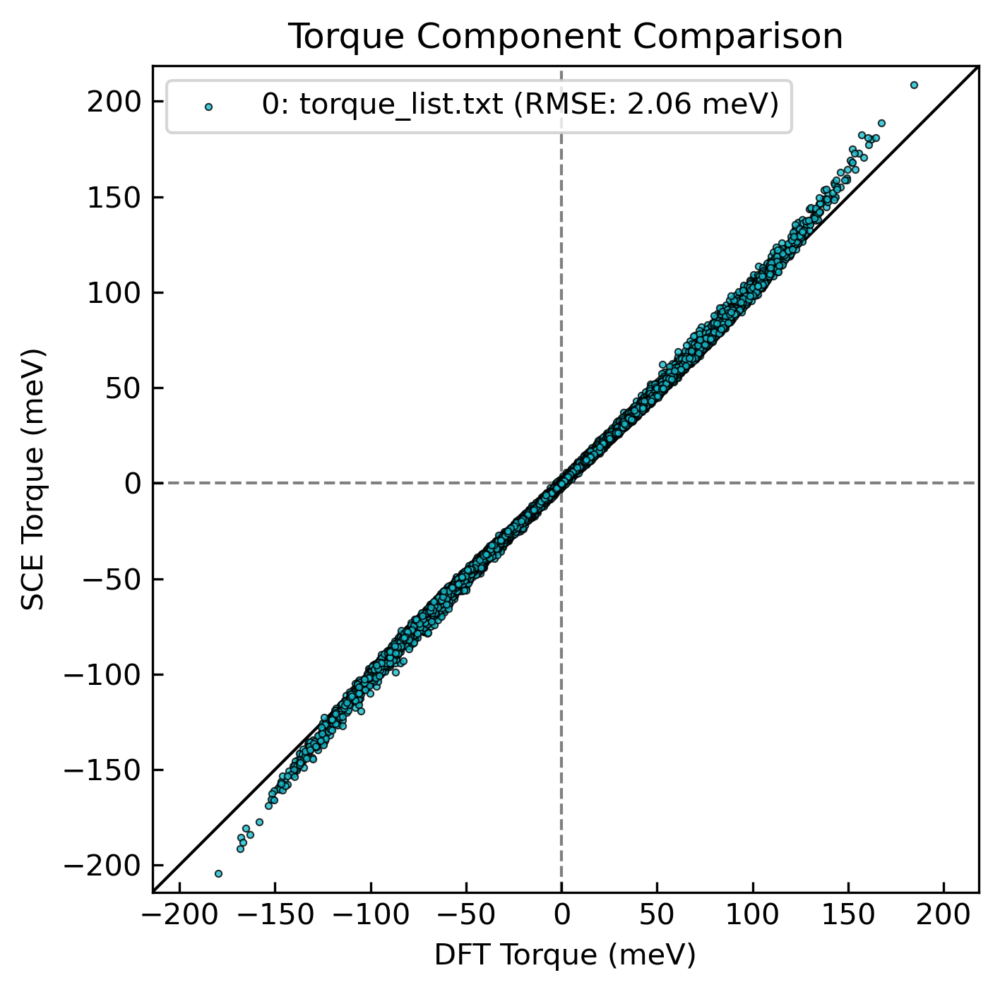
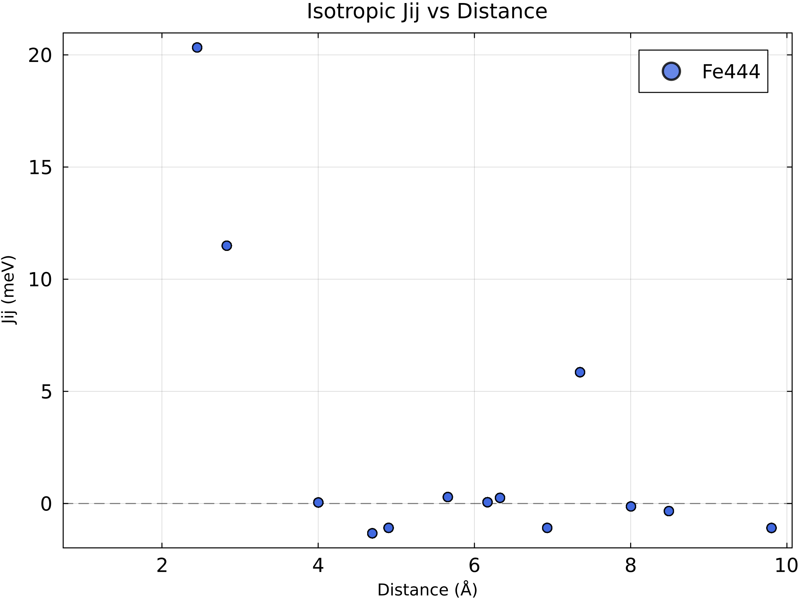
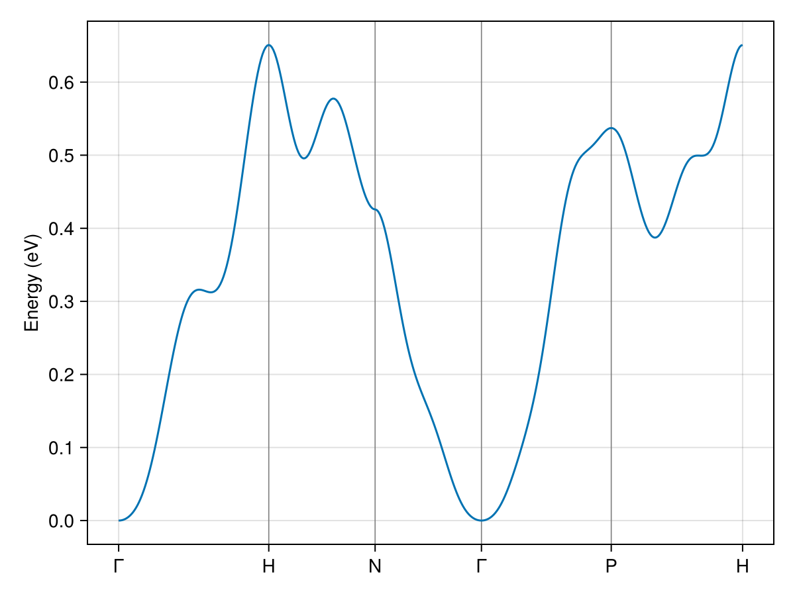
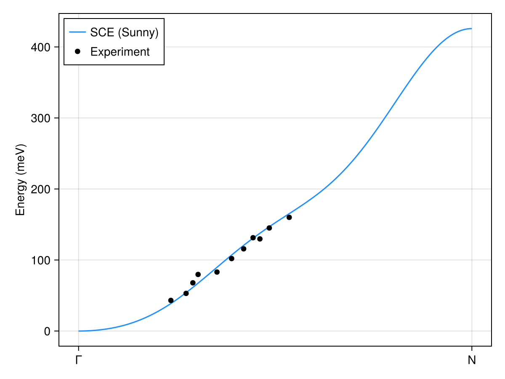

Case 1: bcc Fe
Download the runnable workflow below as a Jupyter notebook or a plain script.
This worked example builds a spin-cluster expansion (SCE) model for body-centered cubic (bcc) iron and walks through the full workflow, from the noncollinear spin-DFT reference data to the fitted exchange interactions.
Overview
The reference system is bcc Fe with conventional lattice constant $a = 2.8298$ Å. We use a $4 \times 4 \times 4$ supercell of the conventional (two-atom) cell, i.e. 128 atoms. The training data is generated with noncollinear, spin-DFT calculations in which the direction of each local moment is constrained, so that for an arbitrary spin configuration we obtain the total energy and the per-atom magnetic torque. These (energy, torque) pairs are exactly what the SCE design matrix is fitted against.
Preparing the inputs
The reference data comes from VASP calculations run with the constrained-direction (penalty) method: the moment direction on every atom is held fixed while the electronic structure relaxes, and the resulting energy and constraining torques are recorded. Sampling many spin configurations (here via the mean-field sampling at $\tau = 0.05$) and collecting their energies and torques produces the training set.
You prepare four VASP input files. The structure (POSCAR) and the run settings (INCAR, KPOINTS) are shown here in abridged form and are downloadable in full; the pseudopotential is described in words because of licensing.
Download the complete input files: INCAR, KPOINTS, POSCAR.
POSCAR — structure
The $4 \times 4 \times 4$ bcc Fe supercell.
Fe444
2.8298
4.0 0.0 0.0
0.0 4.0 0.0
0.0 0.0 4.0
Fe
128
Direct
0.000000000 0.000000000 0.000000000
0.125000000 0.125000000 0.125000000
0.000000000 0.000000000 0.250000000
...
(128 atoms in total)POTCAR — pseudopotential
The pseudopotential file is not redistributed here for licensing reasons. These calculations used the PBE PAW Fe potential with 8 valence electrons.
KPOINTS — k-point mesh
A $\Gamma$-centered $3 \times 3 \times 3$ mesh for the supercell.
Fetest
0
Gamma
3 3 3
0 0 0INCAR — run settings
A single static (NSW = 0, IBRION = -1) noncollinear calculation without spin-orbit coupling (LNONCOLLINEAR = .TRUE., LSORBIT = .FALSE.). The moment directions are constrained with the penalty method (I_CONSTRAINED_M, penalty strength LAMBDA, integration radius RWIGS); M_CONSTR sets the target direction on each atom. Symmetry is switched off (ISYM = 0), as required for arbitrary noncollinear configurations.
The M_CONSTR and MAGMOM lines below show the collinear $+z$ reference (all moments along $+z$); during sampling these per-atom directions are replaced for each spin configuration.
NCORE = 4
!ICHARG = 1
ENCUT = 350.0
PREC = accurate
NBANDS = 1700
GGA = PE
GGA_COMPAT = False
LASPH = True
EDIFF = 1.28E-6
NELM = 60
IMIX = 4
AMIX = 0.05
BMIX = 0.001
AMIX_MAG = 0.05
BMIX_MAG = 0.001
LMAXMIX = 4
NSW = 0
IBRION = -1
LREAL = .FALSE.
LWAVE = .False.
LCHARG = .TRUE.
LORBIT = 0
LNONCOLLINEAR = .TRUE.
LSORBIT = .FALSE.
I_CONSTRAINED_M = 4
RWIGS = 1.22533
LAMBDA = 1
M_CONSTR = 0 0 3.0 0 0 3.0 ... (one triplet per atom, 128 in total)
ISYM = 0
MAGMOM = 0 0 3.0 0 0 3.0 ... (one triplet per atom, 128 in total)The INCAR above sets a small penalty, LAMBDA = 1, only so that the first SCF converges stably; starting directly with a large penalty often runs into convergence trouble. Once this run has converged, do not forget to restart the calculation with a much larger penalty (e.g. LAMBDA = 50), reading the converged charge density by setting ICHARG = 1 (which reads CHGCAR). The constraining torques are only reliable once the direction constraint is tightly enforced. See Penalty Term Dependence for how a too-small LAMBDA degrades the fitted model.
Sampling spin configurations
This step uses the magesty command-line tool; if it is not set up yet, see Installation.
With the template INCAR in hand, draw the spin configurations to compute. We sample from the mean-field-approximation (MFA) thermal distribution at the reduced temperature $\tau = T / T_{\mathrm{C}}^{\mathrm{MFA}} = 0.05$. This is deep in the low-temperature regime, far below the mean-field Curie temperature, so the drawn configurations are small fluctuations about the ferromagnetic ground state. We draw 50 configurations:
magesty vasp mfa INCAR tau --start 0.05 --stop 0.05 --num-points 1 --num-samples 50This writes one INCAR per drawn configuration (sample-NN.INCAR), each with MAGMOM and M_CONSTR set to the sampled directions and all other keys copied from the template. The arguments control the sweep:
--start,--stop, and--num-pointsset the values of the control variable (here $\tau$); the sweep isrange(start, stop; length = num_points). With--start 0.05 --stop 0.05 --num-points 1this collapses to the single temperature $\tau = 0.05$.--num-samplesis the number of configurations drawn per sweep value, so--num-samples 50yields 50 configurations at $\tau = 0.05$ (the total isnum_points×num_samples).
See Mean-Field Sampling for the underlying distribution and the role of $\tau$.
Running the DFT calculations
Run VASP on each sample-NN.INCAR on your own compute resources (a supercomputer or cluster) to obtain the energy and the constraining torques for every configuration. As noted above, do not forget to use a sufficiently large LAMBDA: converge each run first with the small LAMBDA = 1, then restart with a large value (e.g. LAMBDA = 50, reading CHGCAR via ICHARG = 1) so that the torques are reliable.
From VASP to Magesty
The reference data and the structure feed the SCE workflow as two files: the EMBSET training data and the input TOML.
Building the EMBSET
Each calculation produces an OSZICAR holding the energy and the constraining field. Convert the runs into a single EMBSET training-data file with magesty vasp embset, in either of two ways.
Convert each run, then merge. Convert one
OSZICARat a time,magesty vasp embset OSZICAR --output EMBSETand combine the contents of all the resulting
EMBSETfiles into one.Convert all at once. Gather the
OSZICARfiles in one place, e.g. renamed01.oszicar,02.oszicar, …,50.oszicar, and convert them in a single call. Each file becomes one configuration block, numbered in the given order:magesty vasp embset *.oszicar --output EMBSET
The 50 constrained calculations are expensive. To follow along without running them, download the precomputed EMBSET for this example and use it directly in the steps below.
Generating the input TOML
Build the Magesty input TOML from POSCAR with magesty vasp toml:
magesty vasp toml POSCAR --output input.tomlThis fills the [general], [symmetry], [interaction], and [structure] tables from the structure. The interaction settings are written as placeholders, so edit them to the basis you want before fitting. For this example the edited file is:
[general]
name = "Fe444"
nat = 128
kd = ["Fe"]
periodicity = [true, true, true]
[symmetry]
tolerance = 1.0e-5
isotropy = true
[interaction]
nbody = 2
[interaction.body1]
lmax.Fe = 0
[interaction.body2]
cutoff."Fe-Fe" = -1
lsum = 2
[structure]
lattice = [
[11.3192, 0.0, 0.0],
[0.0, 11.3192, 0.0],
[0.0, 0.0, 11.3192],
]
kd_list = [1, 1, 1, 1, ...] # 128 entries, element index per atom
position = [
[0.000, 0.000, 0.000],
[0.125, 0.125, 0.125],
# ... (128 atoms, direct coordinates)
][general]— the system name, atom count (nat = 128), the element listkd(a single species here), and periodicity in all three directions.[symmetry]—tolerancefor spacegroup detection andisotropy = true, which restricts the basis to rotationally invariant ($L_f = 0$) terms, i.e. isotropic exchange.[interaction]—nbody = 2keeps up to pair terms.body1'slmax.Fe = 0is the on-site angular-momentum order;body2'slsum = 2is the cutoff on the summed angular momentum of a pair basis function, andcutoff."Fe-Fe"is the Fe–Fe pair cutoff radius in Å (-1includes all pairs, i.e. no distance cutoff). Together these define an isotropic two-body (pair) model.[structure]— the supercelllattice(the 11.3192 Å cube),kd_list(the element index of each atom), and the 128 atomicpositions in direct coordinates, all taken straight fromPOSCAR.
See Input Keys for the full key reference and the Tools page for the converter options. The edited input.toml is downloadable.
With the input TOML and the combined EMBSET in hand, the remaining sections run the Magesty workflow itself.
Building the basis
Build the symmetry-adapted SCE basis from the input TOML. This runs the SALC construction, the heavy step of the workflow.
using Magesty
basis = SCEBasis("input.toml")SCEBasis(num_atoms=128, num_salcs=13, isotropy=true)Inspect the detected symmetry and the size of the basis:
sym = basis.symmetry
println("Space group: ", sym.international_symbol, " (#", sym.spacegroup_number, ")")
println("Symmetry operations: ", sym.nsym)
println("Atoms in the supercell: ", basis.structure.supercell.num_atoms)
println("Number of SALCs: ", length(basis.salcbasis.salc_list))Space group: Im-3m (#229)
Symmetry operations: 6144
Atoms in the supercell: 128
Number of SALCs: 13Fitting
Pair the basis with the EMBSET reference data to form a dataset, then fit the SCE coefficients with ordinary least squares.
dataset = SCEDataset(basis, "EMBSET"; verbosity = false)
f = fit(SCEFit, dataset, OLS(); verbosity = false)
println("Fitted ", length(coef(f)), " coefficients on ", length(dataset),
" configurations.")Fitted 13 coefficients on 50 configurations.Validation
In-sample fit quality: the root-mean-square errors and the energy coefficient of determination.
using Printf
@printf("RMSE energy : %.3f meV\n", rmse_energy(f) * 1000)
@printf("R^2 energy : %.4f\n", r2_energy(f))
@printf("RMSE torque : %.3f meV\n", rmse_torque(f) * 1000)
@printf("j0 (reference energy) : %.4f eV\n", intercept(f))RMSE energy : 13.788 meV
R^2 energy : 0.9864
RMSE torque : 2.061 meV
j0 (reference energy) : -1029.5406 eVParity plots
For a visual check, write the observed-vs-predicted energies and torques, then render parity plots with the FitCheck helper scripts under tools/.
write_energies(f, "energy_list.txt")
write_torques(f, "torque_list.txt");Render the parity plots with the FitCheck scripts — FitCheck_energy.py and FitCheck_torque.py from the repository's tools/ directory. (When Magesty is installed with ] add Magesty, this directory lives under a version-specific path in the package depot, so the links above are the easiest way to reach the scripts.)
python FitCheck_energy.py energy_list.txt --output energy_parity.png
python FitCheck_torque.py torque_list.txt --output torque_parity.png

Exchange interactions
The fitted couplings can be read back out as a conventional Heisenberg-style exchange. Save the model, then plot the isotropic $J_{ij}$ against pair distance with the plot_jij.jl script from the repository's tools/ directory:
Magesty.save(SCEModel(f), "model.xml");julia plot_jij.jl model.xml -i -HThe two flags adapt Magesty's conventions to the form of the Heisenberg model most common in the literature,
\[\mathcal{H} = -\sum_{i \neq j} J_{ij}\,\hat{\boldsymbol{e}}_i \cdot \hat{\boldsymbol{e}}_j,\]
where $\hat{\boldsymbol{e}}_i$ is the unit vector along the spin on site $i$ and a positive $J_{ij}$ favors ferromagnetic alignment:
-iinverts the sign. Magesty writes the pair energy as $+J_{ij}\,\hat{\boldsymbol{e}}_i \cdot \hat{\boldsymbol{e}}_j$, whereas the Hamiltonian above carries an overall minus sign.-Hhalves the values. By default — and in the SCE coefficients themselves — every interaction term is counted once (each pair appears once, and likewise a three-body or higher cluster contributes a single term; no double counting). The sum over $i \neq j$ above instead visits every pair twice, so the count-once $J_{ij}$ must be divided by two to match it.
See the technical notes for the full mapping from SCE coefficients to conventional spin-model parameters.

The nearest-neighbor coupling dominates and the interaction decays, changing sign, at larger distances — consistent with the ferromagnetic ground state of bcc Fe.
Spin-wave dispersion with Sunny.jl
The lowest-order fitted terms map onto a conventional spin Hamiltonian, which lets us compute a linear spin-wave-theory (LSWT) magnon dispersion with Sunny.jl. Reusing the model XML saved above, generate a runnable Sunny script from it with the magesty sunny script command:
magesty sunny script model.xml --spin 1.1 --output sunny.jlThe --spin value is the physical effective spin length $S_\text{eff} = m/(g\mu_B)$. The SCE couplings are fit from unit spin directions, so they absorb the moment magnitude ($J_\text{SCE} = J_\text{phys}\,S^2$); the magnon frequency, however, is the energy curvature divided by the local angular momentum $\hbar S_\text{eff}$, so the dispersion needs $S_\text{eff}$ explicitly. We use the full ordered moment of bcc Fe, $m \approx 2.2\,\mu_B$ (so $S_\text{eff} \approx 1.1$). This is the moment that carries the precessing angular momentum; the smaller value obtained by integrating the spin density inside the VASP atomic sphere (here $\approx 1.5\,\mu_B$) is a projection artifact and would overstate the dispersion.
Because $S_\text{eff} = 1.1$ is not a half-integer (Sunny's Moment accepts only multiples of $1/2$), magesty sunny script automatically uses its coupling scaling route: Sunny's Moment spin is held at a placeholder $s_0 = 1$ while $S_\text{eff}$ is folded into the exchange constants. The magnon dispersion is then physical; only the absolute static energy of the Sunny system is rescaled (it is not used here).
The generated script builds the spin system from the fitted exchange constants and evaluates the dispersion along the standard bcc high-symmetry path Γ–H–N–Γ–P–H. Magesty itself takes on no Sunny dependency — run the script in an environment that has Sunny installed. The script generated for this example is sunny.jl.
Running it produces the magnon dispersion below:

As a check against experiment, the SCE dispersion along the Γ–N direction closely tracks inelastic neutron-scattering measurements of bcc Fe[expt]. Using the physical $S_\text{eff} = 1.1$ (rather than the $s = 1$ placeholder) lowers the whole dispersion by the factor $1/S_\text{eff} \approx 0.9$, bringing it into closer agreement with the measured energies:

This page was generated using Literate.jl.
- exptExperimental spin-wave energies from C.-K. Loong, J. M. Carpenter, J. W. Lynn, R. A. Robinson, and H. A. Mook, "Neutron scattering study of the magnetic excitations in ferromagnetic iron at high energy transfers", J. Appl. Phys. 55, 1895–1897 (1984). DOI: 10.1063/1.333511. The digitized points used here are in
febcc_spinwave.csv(columns: $q$ in Å⁻¹ along Γ–N, energy in meV).